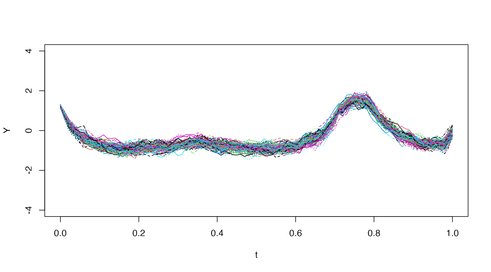
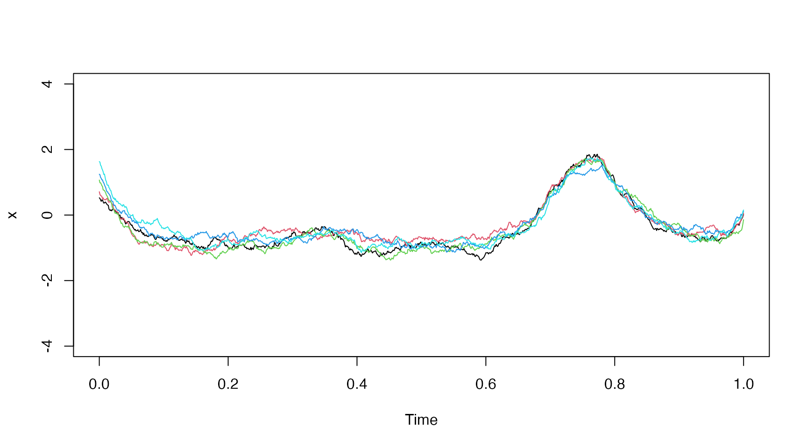
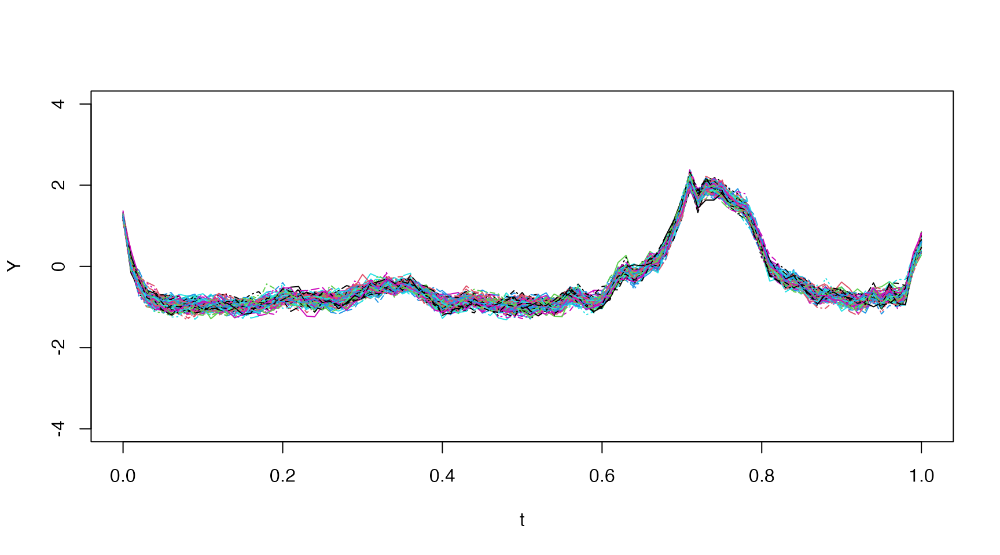

This vignette demonstrates how to use the simulate
method for calculating k-step (state and observation)
simulations.
Notation
Let the set of observations from the initial time \(t_0\) until the current time \(t_{i}\) be noted by \[ \mathcal{Y}_{i} = \left\{ y_{i}, y_{i-1},...,y_{1},y_{0}\right\} \]
A k-step simulation is a sample of the stochastic path of the model stochatic differential equation k time-steps into the future, conditioned on the current state estimate with mean and covariance \[ \hat{x}_{i|i} = \mathrm{E}\left[ x_{t_{i}} | y_{t_{i}} \right] \\ P_{i|i} = \mathrm{V}\left[ x_{t_{i}} | y_{t_{i}} \right] \] A single stochastic simulation can be obtained using the Euler-Maruyama scheme by \[ X_{t_{j+1}} = X_{t_{j}} + f(X_{t_{j}},u_{t_{j}},t_{j}) \, \Delta t_{j} + G(X_{t_{j}},u_{t_{j}},t_{j}) \, \Delta B_{j} \] for \(j=i,...,i+k\), where the initial point follows \[ X_{t_{i}} \sim N(\hat{x}_{i|i}, P_{i|i} ) \] and \[ \Delta B_{j} \sim N(0,\Delta t_{j}) \]
Arguments
The simulate method accepts the following arguments
model$simulate(data,
pars = NULL,
use.cpp = FALSE,
method = "ekf",
ode.solver = "rk4",
ode.timestep = diff(data$t),
simulation.timestep = diff(data$t),
k.ahead = nrow(data)-1,
return.k.ahead = 0:k.ahead,
n.sims = 100,
initial.state = self$getInitialState(),
estimate.initial.state = private$estimate.initial,
silent = FALSE)Argument: method
See the description in the estimate vignette.
Note: The simulate method is currently
only available using the Extended Kalman filter
(method="ekf).
Argument: ode.solver
See the description in the estimate vignette.
Note: When the argument use.cpp=TRUE
then the only solvers available are euler and rk4.
Example
We consider a modified Ornstein Uhlenbeck process:
\[ \mathrm{d}x_{t} = \theta (a_t - x_{t}) \, \mathrm{d}t \, + \sigma_{x} \, \mathrm{d}b_{t} \\ y_{t_{k}} = x_{t_{k}} + \varepsilon_{t_{k}} \] where the mean is some complex time-varying input \(a_t = tu_{t}^{2}-\cos(tu_{t})\), and \(u_{t}\) is a given time-varying input signal.
We create the model and simulate the data as follows:
model = ctsmTMB$new()
model$addSystem(dx ~ theta * (t*u^2-cos(t*u) - x) * dt + sigma_x*dw)
model$addObs(y ~ x)
model$setVariance(y ~ sigma_y^2)
model$addInput(u)
model$setParameter(
theta = c(initial = 2, lower = 0, upper = 100),
sigma_x = c(initial = 0.2, lower = 1e-5, upper = 5),
sigma_y = c(initial = 5e-2)
)
model$setInitialState(list(1, 1e-1*diag(1)))
# Set simulation settings
set.seed(20)
true.pars <- c(theta=20, sigma_x=1, sigma_y=5e-2)
dt.sim <- 1e-3
t.sim <- seq(0, 1, by=dt.sim)
u.sim <- cumsum(rnorm(length(t.sim),sd=0.1))
df.sim <- data.frame(t=t.sim, y=NA, u=u.sim)
# Simulate data
sim <- model$simulate(data=df.sim,
pars=true.pars,
n.sims=1,
silent=T)
# Grab first simulation trajectory
x <- sim$states$x$i0$x1
# Extract observations from simulation and add noise
iobs <- seq(1,length(t.sim), by=10)
t.obs <- t.sim[iobs]
u.obs <- u.sim[iobs]
y = x[iobs] + true.pars["sigma_y"] * rnorm(length(iobs))
# Create data-frame
.data <- data.frame(
t = t.obs,
u = u.obs,
y = y
)We can simulate many trajectories using:
sim <- model$simulate(data=.data,
pars=c(20,1,0.05),
n.sims=100,
silent=T)with parameters \(\theta = 20, \sigma_{x} = 1, \sigma_{y} = 0.05\).
Note: The value of \(\sigma_{y}\) has no impact when doing
“full” simulations (i.e. choosing maximum k.ahead) since no
data updates occur.
The simulations can be plotted quickly using
matplot:
# Get the first (and only in this case) k-step simulation data.frame
X <- sim$states$x$i0
# Grab all the simulations (the first five columns are indices, time, etc.)
Y <- X[,-c(1:5)]
# Grab prediction time column
t <- X[,"t.j"]
# Plot
matplot(t,Y,type="l", ylim=c(-4,4))
Lets see the effect of setting \(\sigma_{x} = 3\):
sim <- model$simulate(data=.data,
pars=c(20,3,0.05),
n.sims=100,
silent=T)
Lets see the effect of setting \(\theta = 50\):
sim <- model$simulate(data=.data,
pars=c(50,1,0.05),
n.sims=100,
silent=T)